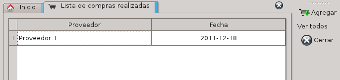
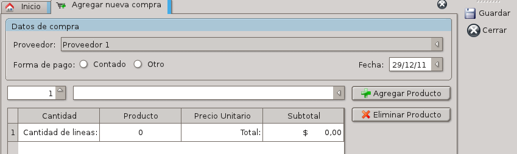
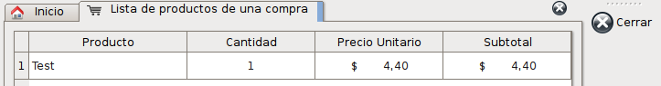

El complemento de compras le permitirá registrar todas las operaciones de ingreso de mercadería, controlando el stock de los productos si lo posee habilitado.
Para ingresar a las compras lo puede hacer desde el botón de compras en la pantalla inicial, o a través del menú Compras -> Compras.
Al ingresar verá un listado de todas las compras realizadas con su correspondiente proveedor y fecha de compra.

Acciones Posibles:
Esta acción le permitirá registrar una nueva compra en el sistema.
La ventana que le aparecerá será la siguiente:

Como primer paso, seleccionamos los datos de la compra:
A continuación ingresamos los artículos que fueron adquiridos. Para esto tenga en cuenta lo siguiente:
Cuando termine de ingresar todos los artículos comprados, utilice la acción Guardar.
Se verificará que los productos estén declarados, se consultará los artículos que desea dar de alta y su precio, y se registrará la compra.
En caso de error, no se modificarán los stocks de los productos.
Si ingresa un producto existente en stock, pero el precio de stock difiere del precio de costo actual, se le solicitará que actualice el precio de costo.
Esta acción le mostrará el listado de productos que corresponden a la lista seleccionada. Primero seleccione una compra especifica y al utilizar la acción aparecerá una lista como la siguiente:

Con esta acción se cargarán todos los datos y aparecerán en el listado.